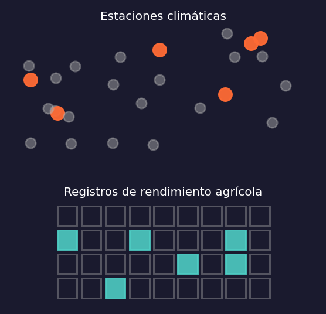
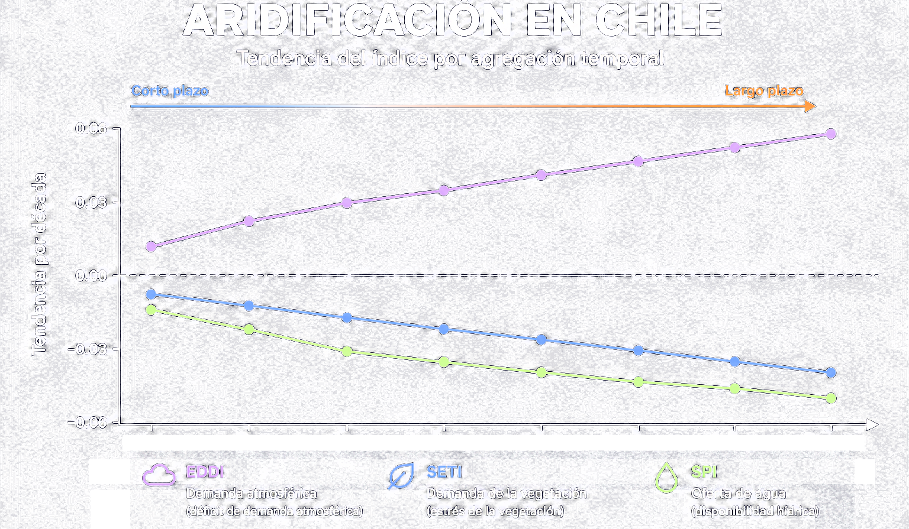
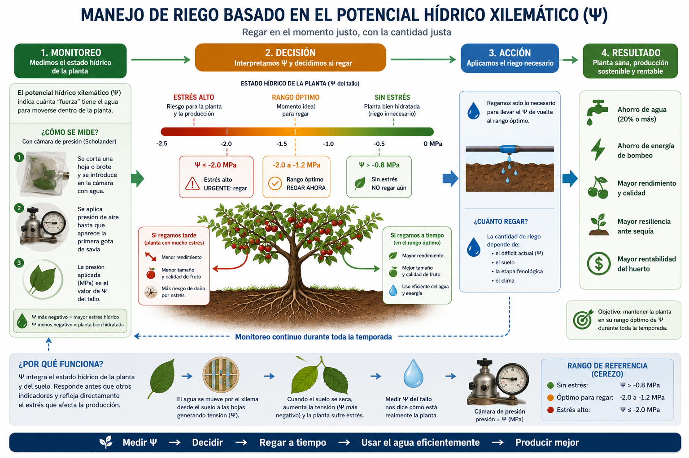

Francisco Zambrano
De la sequía a la aridificación: análisis de datos satelitales para la adaptación agrícola al cambio climático
El Arco de la Investigación
Origen
2007–2017
Inmersión
2018–2025
Visión
2025–
Investigador Responsable de proyectos ANID por +CLP 1.200 MM adjudicados
El Desafío de Origen
2007: Riego deficitario en vides para vino (tesis de pregrado). ↳ hoy: SatOri
2013-2015: Sección sequía informes agrometeorológicos INIA.
2017: Sequía agrícola en Chile: de la evaluación a la predicción satelital (tesis doctoral). ↳ hoy: ODES-Chile
🇺🇸 National Drought Mitigation Center
🇳🇱 ITC — University of Twente
Pasantías doctorales de investigación
Sequía vs déficit hídrico:
- Parecido pero no lo mismo, usualmente confundido.
Datos climáticos y de rendimiento: escasos, dispersos e incompletos
- Dos escalas: nacional (Chile) y local (huerto) *¿impacto del clima en la agricultura? ¿Qué hacemos?
Primer Marco de Trabajo

Key Insight: Regresión óptima y deep learning predicen la productividad agrícola con R²=0.95–0.96 un mes antes del fin de temporada — la base de un sistema de alerta temprana.
Zambrano et al. (2018), Remote Sensing of Environment 219, 15–30. doi.org/10.1016/j.rse.2018.10.006
La Pregunta Forzada
Presente
¿Esto es sequía… o ya es aridificación?
El Resultado Crítico

Esto revela que Chile central transita de una sequía cíclica a una aridificación estructural del paisaje — que explica hasta un 78% de la expansión de matorral y un 40% del cambio en área forestal.
Zambrano et al. (2025), Earth’s Future — base científica de ODES-Chile. https://doi.org/10.1029/2025EF006744
Adaptación

Zambrano et al. (2025), Agricultural Water Management 318, 109721 — base científica de SatOri.https://doi.org/10.1016/j.agwat.2025.109721
Conectando los Puntos
Teledetección + estadística espacio-temporal + sequía+ aridificación
Machine Learning + sistemas operacionales de monitoreo hídrico+ inferencia causal y socio-hidrología
Ciencia predictiva y accionable para la adaptación agrícola
Hoy, ambos orígenes operan como sistemas de decisión en producción:
Direcciones Futuras
Financiamiento y publicaciones en curso (2025–2026)
Financiamiento
Adjudicado Anillos ACT (CLP 660 MM) — cuenca del Aconcagua.
En evaluación FONDECYT Regular (CLP 220 MM) ↳ extiende ODES-Chile
En evaluación FIA — ΨSat ↳ extiende SatOri
Publicaciones en revisión
En revisión Journal of Hydrology — eficiencia hídrica bajo aridificación. ↳ extiende ODES-Chile
En consideración Nature Water — embalses y vulnerabilidad a la megasequía. ↳ extiende ODES-Chile
En revisión IEEE Geoscience and Remote Sensing Letters — fusión multi-sensor para estimación de biomasa aérea en trigo. ↳ extiende ODES-Chile
Gracias
Mi objetivo es transformar datos satelitales en decisiones que ayuden a Chile a adaptarse a un futuro más seco.
Universidad de Concepción · ITC — Universidad de Twente · CALMIT / NDMC · Centro Hemera — Universidad Mayor · Universidad de Las Américas · ANID